Hey there,
With the May update of Windows 10 (named Windows 2004 :) ) being available since this week, together with DockerCon virtual conference, I think it was the right time to (finally) migrate my current Docker Desktop in Hyper-V mode to the new WSL 2 (Windows Subsystem for Linux).
In short, the process was smooth, straight forward, and not having any real impact on my “demo environment” I’m using continuously during my Azure training workshops and public speaking gigs.
This also only took about 20min of my time, including writing this blog post. LOL.
Here we go:
Prerequisites
- The main prerequisite I want to highlight here is you need the May 2020 update for your Windows 10 machine; If you don’t have it yet, here is a quick how-to-install the May 2020 Update:
-
Go to Settings / Update & Security / Windows Update. Here, select “Check for updates”.
-
Once the update is listed, select Download and install. (If you don’t see the notification to download and install, the update may not have been published yet for your machine/region, but you should receive it any time soon. I mean it’s the May update :) (actually was the April update, but due to COVID19 got pushed out a bit). Also make sure you currently are running Windows 10 version 1903 or version 1909.)
-
Once the download is finished and ready to install, you’ll get a notification to choose the right time to finish the installation and reboot your computer. I actually ran this automated over night, and it welcomed me this morning.
-
Why not required for my Docker and WSL 2 upgrade, I was suprised there is No Edge browser included with this release, so that’s the first application I updated…
Installing WSL 2
- WSL (Windows Subsystem for Linux) was released almost 3 years ago, and got recently upgraded to v2, as part of the Windows 10 May update. It provides an almost full Linux distri (Ubuntu, openSUSE, Kali, Debian,…). WSL 2 comes with incredible performance improvements, nicer integration for mixed Windows/Linux platform developers (did somebody say dotnet core?) and also provides Docker support. If you were running the WSL v1 already, you don’t have to do anything but will get a notification from within the WSL environment to upgrade to WSL 2.
I wasn’t running WSL yet, so went through the following steps, per the Microsoft documentation:
- Open a PowerShell session as Administrator, and run the following cmdlet to install the WSL feature:
dism.exe /online /enable-feature /featurename:Microsoft-Windows-Subsystem-Linux /all /norestart
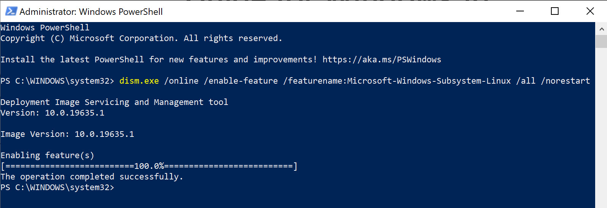
- Next, install the Virtual Machine (Hypervisor) feature, by running the following cmdlet:
dism.exe /online /enable-feature /featurename:VirtualMachinePlatform /all /norestart
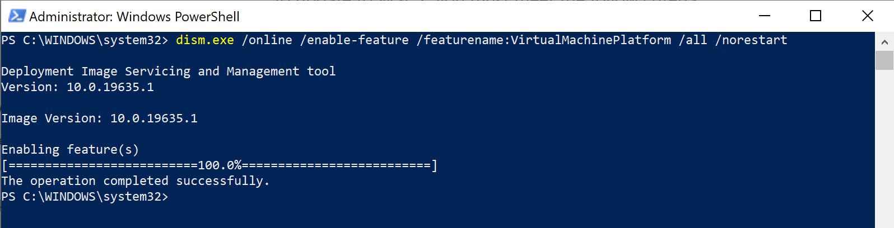
- Enable WSL 2 as default by running the following cmdlet:
wsl --set-default-version 2
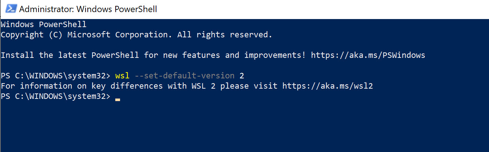
- You can now install your Linux distri of choice, by launching the Microsoft Store App on your Windows 10 machine. I selected Ubuntu, but know you have a few other ones available as well
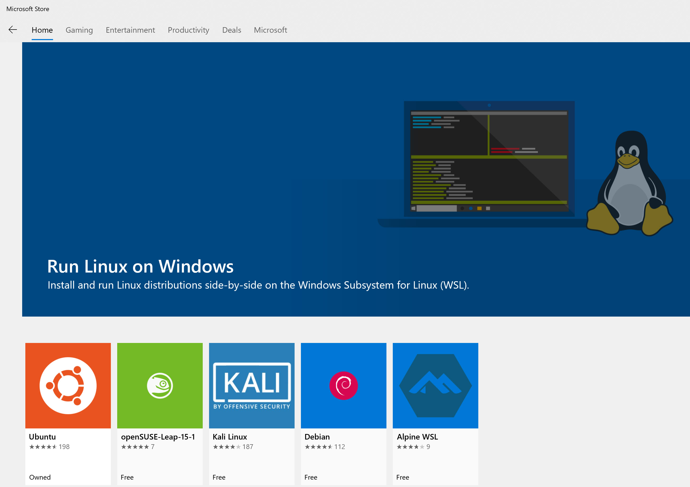
- Click Install
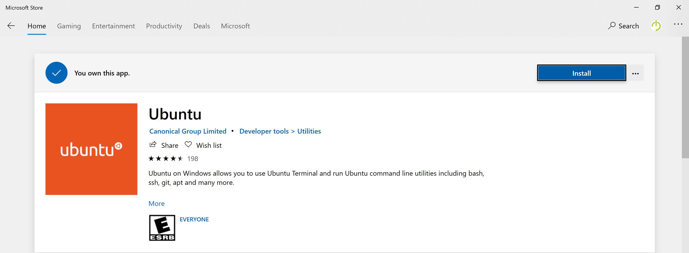
- Wait for the install to complete, and press launch to start the Ubuntu environment
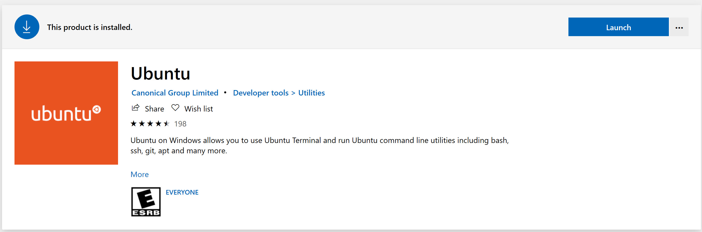
- Give it a few minutes to finalize the Ubuntu installation within the WSL environment. You are also prompted for a Linux local administrative username and password (this can - and SHOULD - be different from your Windows local admin account credentials for security reasons…!)
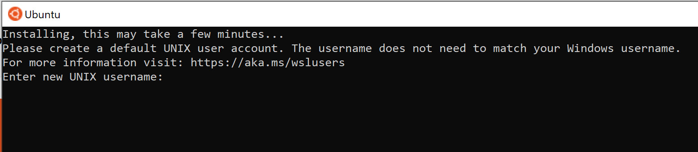
- After a few moments, your Ubuntu environment is up-and-running. Again, this replaces any former Ubuntu virtual machine you had running on Hyper-V, Virtualbox, VMware Player,… on the same Windows 10 machine of yours.
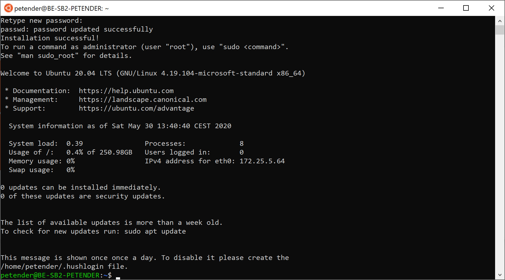
Keep in mind you cannot install any “GUI” applications inside the WSL environment, but can use any commandline-based application. It’s a full Linux distri remember!!
Switching Docker to WSL 2
My setup here involved a “migration” from Docker using it’s own Moby Hyper-V VM to WSL 2; this means I’m losing the current Linux containers I already use within my Docker environment. If you want to reuse them within the WSL environment, make sure you get a list of them before switching the Docker mode, by running the following cmdlet (PowerShell or CMD Prompt):
docker images
which provides you an overview of the (Linux) Docker images you currently have on your machine
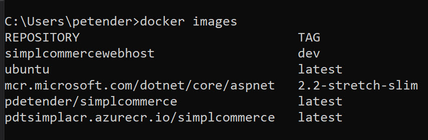
I only have a few left, since I did a nice cleanup before (docker rmi )
- From the Docker Desktop context menu / Settings / enable the “Use the WSL 2 based engine”
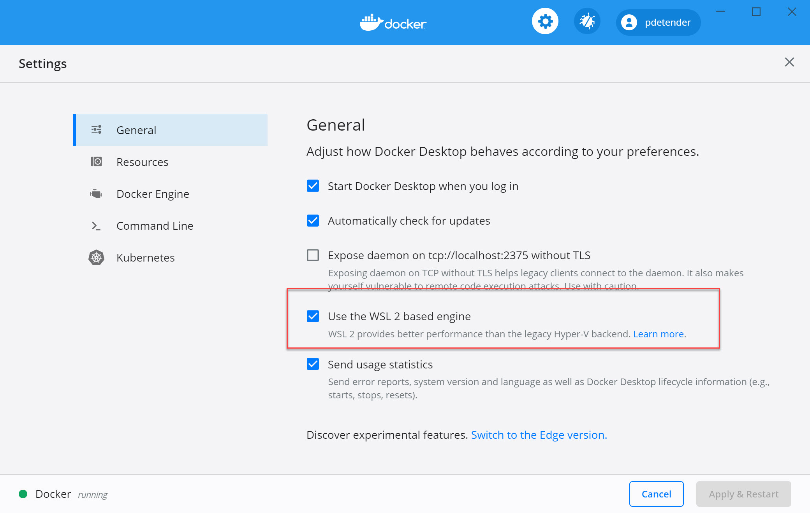
- While not really needed, it’s always nice to validate this is actually working fine; the first check I did is executing a “Docker info” command, which shows the running state of the Docker engine, while at the same time validating the former Docker Moby VM is down - obviousy this was the case:
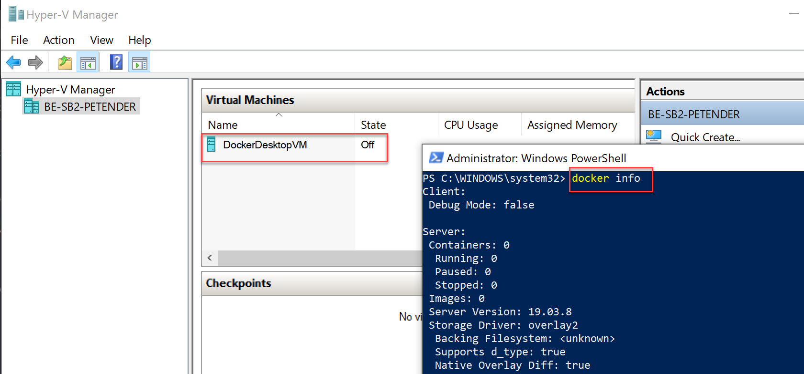
- We can now download and run our former Docker images again, to have the same setup as before; on my machine, I had a few images available, like “Ubuntu”, “SimplCommerce” (an e-commerce app I use in workload demos,…); let’s grab these by executing a “Docker run " command:
for my pdetender/simplcommerce (on Docker Hub)
and
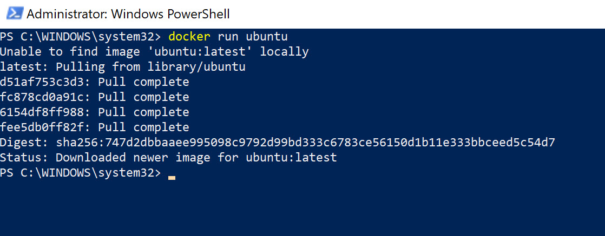
for a sample Ubuntu container; awesome! it works!
Updating (or installing) Visual Studio Code - Docker Extension
Managing Docker is all commandline based, and it’s not always that convenient to remember all commands during live demos. And even during day-to-day operations, I tend to make my life a bit easier, if there is a GUI available for “easy tasks”. That’s where VSCode extensions are powerful. Including the Docker one; if you haven’t installed it yet, please do so :).
- Right after my upgrade to WSL 2 above, it got picked up by VSCode immediately, showing me the following notification:
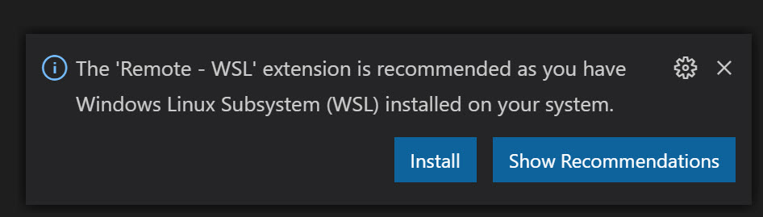
which I obviously installed, ending up in (yet another) extension:
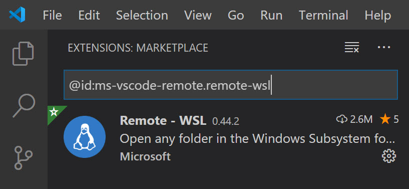
- Next, I validated my version of the Docker extension, if it was updated to the latest one (if you installed this extension already, it typically runs a silent update by itself…)
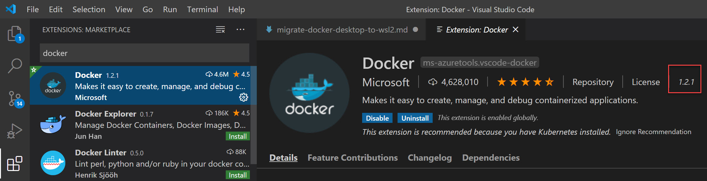
- Which allows us to manage our Docker environment from the VSCode GUI now:
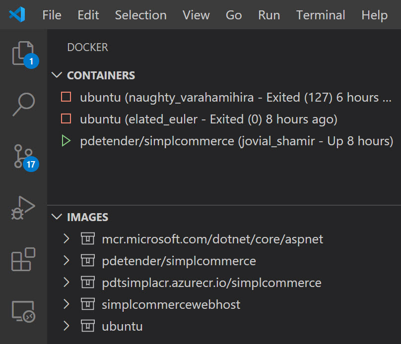
and guaranteeing again for some nice upcoming demos during my Azure workshops!
Summary
In today’s post, I walked you through an upgrade (or installation…) of a Docker Desktop on Windows 10 from the Moby VM Hyper-V setup to the latest WSL 2, thanks to an upgrade in Windows 10 May 2020 update build. While I only did a few quick functional tests, making sure my environment is still running as before, I have a slight feeling this WSL 2 is going to be used much more, and not just for my Docker integration.
Ping me if you got any questions!

/Peter